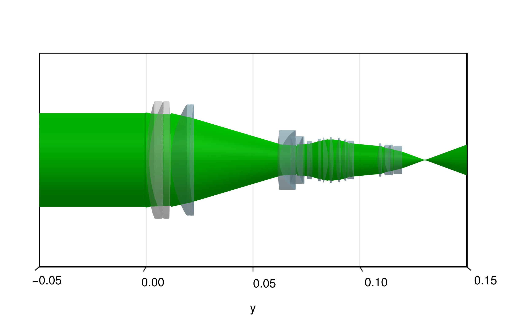

Lens groups
This example highlights the capabilities of ObjectGroups. Several groups of optics will be defined and then traced like an ordinary System of optical elements.
using CairoMakie, BeamletOptics
# focus group
l1 = SphericalDoubletLens(103.4371e-3, 61.14925e-3, -603.2959e-3, 1.5e-3, 10.03975e-3, 55e-3, 1.963000, 1.603112)
l2 = SphericalLens(49.97282e-3, 168.2416e-3, 8.622723e-3, 52e-3, 1.603001)
l_2 = BeamletOptics.thickness(l1) + 1e-4
translate3d!(l2, [0, l_2, 0])
focus_group = ObjectGroup([l1, l2])# variator
l3 = SphericalLens(100.3834e-3, 16.72327e-3, 1e-3, 28.00995e-3, λ -> 1.603112)
l4 = SphericalLens(-30.28003e-3, 21.29033e-3, 0.5e-3, 22.31297e-3, λ -> 1.764500)
l5 = SphericalLens(23.06904e-3, 243.5999e-3, 3.2e-3, 22.12162e-3, λ -> 1.963000)
l_3 = l_2 + BeamletOptics.thickness(l2) + 1.1e-3
l_4 = l_3 + BeamletOptics.thickness(l3) + 7.25496e-3
l_5 = l_4 + BeamletOptics.thickness(l4) + 0.5e-3
translate3d!(l3, [0, l_3, 0])
translate3d!(l4, [0, l_4, 0])
translate3d!(l5, [0, l_5, 0])
variator_group = ObjectGroup([l3, l4, l5])# compensator
l6 = SphericalLens(-24.31747e-3, -255.5571e-3, 1e-3, 17.70449e-3, λ -> 1.638539)
compensator = l6
l_6 = l_5 + BeamletOptics.thickness(l5) + 40.889e-3
translate3d!(l6, [0, l_6, 0])
# master I
l7 = SphericalLens(Inf, Inf, 1.2e-3, 19.896e-3, λ -> 1.516330)
l8 = SphericalLens(1207.65e-3, -28.39078e-3, 2.4e-3, 21.05932e-3, λ -> 1.583126)
l9 = SphericalLens(74.34233e-3, -62.52319e-3, 2.4e-3, 21.61478e-3, λ -> 1.570989)
l10 = SphericalLens(42.10459e-3, -128.0055e-3, 2.4e-3, 20.88128e-3, λ -> 1.583126)
l11 = SphericalLens(28.62223e-3, 378.3789e-3, 2.4e-3, 19.26452e-3, λ -> 1.651000)
l12 = SphericalLens(-40.92189e-3, 41.10496e-3, 1e-3, 18.17719e-3, λ -> 1.854779)
l_7 = l_6 + BeamletOptics.thickness(l6) + 4.765141e-3
l_8 = l_7 + BeamletOptics.thickness(l7) + 1e-3
l_9 = l_8 + BeamletOptics.thickness(l8) + 0.2e-3
l_10 = l_9 + BeamletOptics.thickness(l9) + 1e-3
l_11 = l_10 + BeamletOptics.thickness(l10) + 0.1e-3
l_12 = l_11 + BeamletOptics.thickness(l11) + 1.583061e-3
translate3d!(l7, [0, l_7, 0])
translate3d!(l8, [0, l_8, 0])
translate3d!(l9, [0, l_9, 0])
translate3d!(l10, [0, l_10, 0])
translate3d!(l11, [0, l_11, 0])
translate3d!(l12, [0, l_12, 0])
master_group_I = ObjectGroup([l7, l8, l9, l10, l11, l12])# master II
l13 = SphericalLens(34.65626e-3, -45.71147e-3, 2.4e-3, 15.6e-3, λ -> 1.762001)
l14 = SphericalLens(27.08863e-3, 11.38107e-3, 1e-3, 14.40932e-3, λ -> 1.761821)
l15 = SphericalLens(20.49712e-3, -203.9304e-3, 2.4e-3, 14.40932e-3, λ -> 1.693501)
l16 = SphericalLens(Inf, Inf, 4e-3, 12.92286e-3, λ -> 1.522494)
l_13 = l_12 + BeamletOptics.thickness(l12) + 11.97864e-3
l_14 = l_13 + BeamletOptics.thickness(l13) + 0.1e-3
l_15 = l_14 + BeamletOptics.thickness(l14) + 1.428573e-3
l_16 = l_15 + BeamletOptics.thickness(l15) + 0.2e-3
translate3d!(l13, [0, l_13, 0])
translate3d!(l14, [0, l_14, 0])
translate3d!(l15, [0, l_15, 0])
translate3d!(l16, [0, l_16, 0])
master_group_II = ObjectGroup([l13, l14, l15, l16])# zoom lens
lens = ObjectGroup([focus_group, variator_group, compensator, master_group_I, master_group_II])
system = System(lens)# generate render
fig = Figure(size=(600, 380))
aspect = (1,2,1)
limits = (-0.05, 0.05, -0.05, 0.15, -0.05, 0.05)
ax = Axis3(fig[1, 1], aspect=aspect, limits=limits, azimuth=0, elevation=1e-3)
# hide decorations for vis. purposes
hidexdecorations!(ax)
hidezdecorations!(ax)
render!(ax, system)
for z in LinRange(-0.003, 0.003, 5)
ray = Ray([0, -0.05, z], [0, 1.0, 0])
beam = Beam(ray)
solve_system!(system, beam, r_max=40)
render!(ax, beam, flen=0.1)
endMoving groups
Now the variator and compensator will be moved in order to simulate a zooming effect.
function compensator_movement(x)
if x < 0 || x > 42.75e-3
error("x out of bounds")
end
return 1e3*0.01169*x^2 - 0.4155*x
end
Δx_variator = 40e-3
Δx_compensator = compensator_movement(Δx_variator)
translate3d!(variator_group, [0, Δx_variator, 0])
translate3d!(compensator, [0, Δx_compensator, 0])
render!(ax, system)
for z in LinRange(-0.022, 0.022, 5)
ray = Ray([0, -0.05, z], [0, 1.0, 0])
beam = Beam(ray)
solve_system!(system, beam, r_max=40)
render!(ax, beam, flen=0.1)
endBeam type compatibility
We can easily switch out the type of beam we are tracing through the system using the API of this package. We will trace a single GaussianBeamlet through the objective. Note that this example is for illustration purposes only and does not yield an accurate representation of the actual imaging preformance due to the limitations of the beam tracing method described in the Stigmatic Beamlets section.
beam = GaussianBeamlet([0, -0.05, 0], [0, 1, 0], 1000e-9, 2.2e-2)
solve_system!(system, beam, r_max=40)
render!(ax, beam, color=:green2)
render!(ax, system)